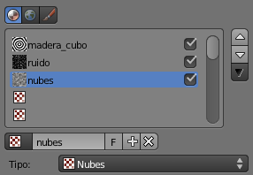
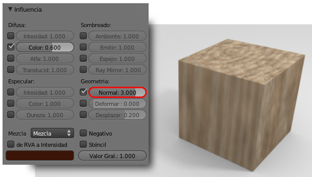
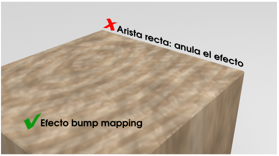

Bump mapping
Nos vamos a detener en una edición que se conoce como bump mapping. Como no queremos entrar a un análisis muy exhaustivo de este recurso diremos que con este tipo de edición vamos a simular relieves donde no los hay. Lo mejor es un ejemplo sobre nuestra textura de madera.
La última de las texturas que le añadimos era una de tipo Nubes para darle un aspecto corroído o envejecido. Para darle a la madera un tratamiento en el que esas zonas corroídas se metan hacia adentro de la superficie podríamos hacer una subdivisión y deformar la malla pero con bump mapping conseguimos un engaño visual aceptable si las condiciones lo permiten. Lo vemos.
Nos situamos en la textura de la que estamos hablando.
Nos dirigimos a la botonera Influencia para activa la opción Geometría: Normal y aumentamos su valor a 2.000. El resultado en el render es el mencionado. Blender fabrica el engaño visual adaptándose a la dirección de la luz y que parezca que la malla se deforma (se nota sobre todo en la cara superior debido a que tenemos editado el Tamaño en Z).
¿Cuál es el punto débil de este recurso? Pues que la malla en realidad no se ha deformado y las aristas delatan que no es más que un truco.
